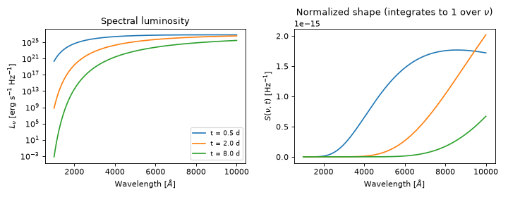
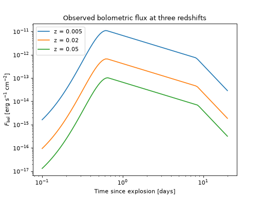
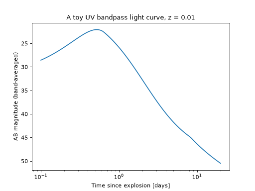
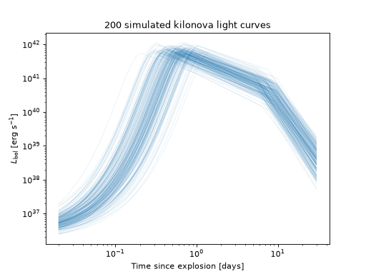
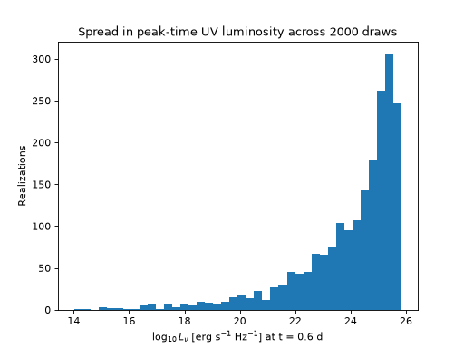

Models#
Every transient in UVEX Transients is, underneath everything else, a model: an object that tells you how bright a source is, at what color, at any given time. This page walks through the day-to-day things you’ll do with a model: create one, evaluate it every way you might need, and draw random realizations of it.
We’ll use the kilonova model, KilonovaCoolingBlackbodySED,
as our running example throughout, but everything here works identically for any model in
uvex_transients.models.
Getting Started with Models#
At its core, a model is just two things bolted together:
A function \(L_\nu(\nu, t)\) the spectral luminosity: how much energy per unit time and frequency the source radiates, at frequency \(\nu\) and time \(t\) since explosion.
A named set of parameters that function depends on; things like a peak brightness, a characteristic temperature, a rise or decline timescale.
That’s it. Everything else on this page is built on top of that one idea: give the model some parameter values, and it will tell you \(L_\nu(\nu, t)\) (or any of the several derived quantities below) for those values.
Let’s make that concrete. Creating a model is as simple as instantiating its class:
>>> from uvex_transients.models.kilonovae import KilonovaCoolingBlackbodySED
>>> sed = KilonovaCoolingBlackbodySED()
>>> print(sed)
... KilonovaCoolingBlackbodySED(
amplitude: free, prior=normal
t_peak: free, prior=lognormal
decline_index_1: free, prior=uniform
decline_index_2: free, prior=uniform
t_break: free, prior=uniform
T0: free, prior=normal
T_floor: free, prior=normal
alpha_T: free, prior=uniform
)
Once instantiated, the model provides an interface for both inspecting and modifying the parameters, and for evaluating the SED.
Hint
Instantiation of a model class does not require any arguments; however, all models accept keyword arguments to
override the default parameters. These need to be Parameter objects,
which can be created with a specified name, prior, and additional metadata. One can also modify the parameters after
instantiation.
Important
A freshly-created model doesn’t have fixed parameter values: each parameter instead carries a prior, a plausible range it could take (we’ll come back to that in Sampling). To actually evaluate the model, we need one concrete set of values. The easiest way to get one is to draw a single random realization:
import numpy as np
import matplotlib.pyplot as plt
from astropy import units as u
from uvex_transients.models.kilonovae import KilonovaCoolingBlackbodySED
sed = KilonovaCoolingBlackbodySED()
params = sed.sample_parameters(rng=0) # one realization of every parameter
t = np.geomspace(0.02, 30, 200) * u.day
L_bol = sed.eval_bolometric(t, **params)
plt.plot(t.to_value(u.day), L_bol.to_value(u.erg / u.s))
plt.xscale("log")
plt.yscale("log")
plt.xlabel("Time since explosion [days]")
plt.ylabel(r"$L_\mathrm{bol}$ [erg s$^{-1}$]")
plt.title("One simulated kilonova bolometric light curve")
(Source code, png, hires.png, pdf)
{kind=link}
{kind=link}

That’s the whole workflow: pick parameter values, then ask the model for a quantity you care about. The rest of this page is just a tour of the quantities you can ask for (below) and the different ways to pick parameter values (Sampling).
Computing Observational Properties#
Once you have a model and some parameter values, there’s a whole family of quantities you can compute from them – from the source’s own rest-frame luminosity, to what a real telescope would actually measure once redshift, distance, and a bandpass get involved. The table below is a map of everything available; the sections after it show each one in action.
Quantity |
Method |
Units |
Needs a distance? |
|---|---|---|---|
Spectral luminosity \(L_\nu(\nu, t)\) |
erg/s/Hz |
No |
|
Bolometric luminosity \(L_\mathrm{bol}(t)\) |
erg/s |
No |
|
Normalized spectral shape \(S(\nu, t)\) |
1/Hz |
No |
|
Observed flux density \(F_\nu(\nu, t)\) |
erg/s/cm2/Hz |
Yes |
|
Observed bolometric flux \(F_\mathrm{bol}(t)\) |
erg/s/cm2 |
Yes |
|
Band-averaged flux density |
erg/s/cm2/Hz |
Yes |
|
Apparent AB magnitude |
mag |
Yes |
|
Band-averaged AB magnitude |
mag |
Yes |
|
AB magnitude over a real instrument bandpass |
mag |
Yes |
Tip
Every method in this table also has plain-float (_cgs) and natural-log (_log,
_log_cgs) counterparts, for when you’re working with large arrays and want to skip
Quantity overhead or need extra numerical headroom. Unless you have a
specific reason to reach for one of those, the methods below (which take and return
Quantity objects) are the ones you want.
Rest-Frame Quantities#
These describe the source itself, with no reference to how far away it is or what’s observing it.
eval() gives the spectral luminosity at any
frequency and time; eval_bolometric() (used
above) integrates that over all frequency; and
eval_spectrum() gives the normalized
shape of the spectrum at fixed time, independent of overall brightness:
import numpy as np
import matplotlib.pyplot as plt
from astropy import units as u
from uvex_transients.models.kilonovae import KilonovaCoolingBlackbodySED
sed = KilonovaCoolingBlackbodySED()
params = sed.sample_parameters(rng=0)
wave = np.linspace(1000, 10000, 300) * u.AA
nu = wave.to(u.Hz, equivalencies=u.spectral())
fig, (ax_L, ax_S) = plt.subplots(1, 2, figsize=(9, 3.5))
for t in [0.5, 2, 8] * u.day:
L_nu = sed.eval(nu, t, **params)
S = sed.eval_spectrum(nu, t, **params)
ax_L.plot(wave.to_value(u.AA), L_nu.to_value(u.erg / u.s / u.Hz), label=f"t = {t}")
ax_S.plot(wave.to_value(u.AA), S.to_value(1 / u.Hz), label=f"t = {t}")
ax_L.set_yscale("log")
ax_L.set_xlabel(r"Wavelength [$\AA$]")
ax_L.set_ylabel(r"$L_\nu$ [erg s$^{-1}$ Hz$^{-1}$]")
ax_L.set_title("Spectral luminosity")
ax_L.legend(fontsize=8)
ax_S.set_xlabel(r"Wavelength [$\AA$]")
ax_S.set_ylabel(r"$S(\nu, t)$ [Hz$^{-1}$]")
ax_S.set_title("Normalized shape (integrates to 1 over $\\nu$)")
fig.tight_layout()
(Source code, png, hires.png, pdf)
{kind=link}
{kind=link}

Notice that eval and eval_spectrum differ only by an overall, time-dependent
normalization: eval_spectrum is exactly eval divided by eval_bolometric at that same
time, which is handy whenever you only care about color evolution and not absolute brightness.
Observed Flux#
As soon as you care about what a telescope would actually see, you need to place the source at a
distance – and, for anything cosmological, account for the redshift stretching its spectrum.
flux() and
flux_bolometric() are the observed-frame
analogs of eval and eval_bolometric above: pass a redshift (or a
luminosity_distance directly, if you already have one) and the model takes care of the
\((1+z)\) bandpass shift and inverse-square dilution for you:
import numpy as np
import matplotlib.pyplot as plt
from astropy import units as u
from uvex_transients.models.kilonovae import KilonovaCoolingBlackbodySED
sed = KilonovaCoolingBlackbodySED()
params = sed.sample_parameters(rng=0)
t = np.geomspace(0.1, 20, 100) * u.day
nu = (2000 * u.AA).to(u.Hz, equivalencies=u.spectral())
for z in [0.005, 0.02, 0.05]:
F_bol = sed.flux_bolometric(t, redshift=z, **params)
plt.plot(t.to_value(u.day), F_bol.to_value(u.erg / u.s / u.cm**2), label=f"z = {z}")
plt.xscale("log")
plt.yscale("log")
plt.xlabel("Time since explosion [days]")
plt.ylabel(r"$F_\mathrm{bol}$ [erg s$^{-1}$ cm$^{-2}$]")
plt.title("Observed bolometric flux at three redshifts")
plt.legend()
(Source code, png, hires.png, pdf)
{kind=link}
{kind=link}

flux, flux_bolometric, and every other observed-frame method below also accept a
log_attenuation keyword for applying Milky Way foreground dust – see
uvex_transients.dust for how to compute that array for a given sky position.
Band-Integrated Flux and Magnitudes#
No real instrument observes at a single, infinitely narrow frequency – it integrates the
spectrum over some bandpass. flux_band() and
mag_band() do exactly that: give them a
frequency grid and the (dimensionless) throughput at each point, and they return the
throughput-weighted flux density, or its AB magnitude, over that band. Here we build a simple
Gaussian bandpass by hand to stand in for a real UV filter:
import numpy as np
import matplotlib.pyplot as plt
from astropy import units as u
from uvex_transients.models.kilonovae import KilonovaCoolingBlackbodySED
sed = KilonovaCoolingBlackbodySED()
params = sed.sample_parameters(rng=0)
# A toy ~2250 A bandpass, standing in for a real UVEX filter.
lam0, fwhm = 2250 * u.AA, 400 * u.AA
wave = np.linspace(lam0 - 3 * fwhm, lam0 + 3 * fwhm, 200)
throughput = np.exp(-0.5 * ((wave - lam0) / (fwhm / 2.3548)) ** 2).value
nu_grid = wave.to(u.Hz, equivalencies=u.spectral())
t = np.geomspace(0.1, 20, 100) * u.day
mag = sed.mag_band(nu_grid, throughput, t, redshift=0.01, **params)
plt.plot(t.to_value(u.day), mag.value)
plt.gca().invert_yaxis()
plt.xscale("log")
plt.xlabel("Time since explosion [days]")
plt.ylabel("AB magnitude (band-averaged)")
plt.title("A toy UV bandpass light curve, z = 0.01")
(Source code, png, hires.png, pdf)
{kind=link}
{kind=link}

For a single, narrow frequency rather than an integrated band,
mag() is the more direct (and cheaper)
choice – it’s the same calculation as flux above, just expressed as an AB magnitude instead
of a flux density.
If you’re working with a real instrument response rather than a hand-built throughput array,
mag_bandpass() takes a synphot
SpectralElement directly (e.g. one of an m4opt Detector’s own bandpasses) and reads its
frequency grid and throughput off of it for you, so you never have to build the arrays by hand.
Sampling#
So far every example has used one fixed set of parameter values. The real strength of a model, though, is that its parameters aren’t just numbers – each one carries a prior, so you can cheaply generate as many plausible realizations as you like, and see the population of light curves a model predicts rather than just one.
Model Parameters and Priors#
A model behaves like a dictionary of its parameters, so you can inspect any one of them – or the prior it draws from – individually:
sed["t_peak"] # the Parameter object for t_peak
sed["t_peak"].prior # LogNormalPrior(mean=0.0, sigma=0.3)
sed["t_peak"].is_fixed # False -- it's free by default
You can also pin a parameter to a constant, bypassing its prior entirely – handy for quick, deterministic checks such as “what does the light curve look like at exactly the literature value?”:
sed["t_peak"].fix(0.6 * u.day)
sed["t_peak"].is_fixed # True
sed["t_peak"].unfix() # ...and release it again to go back to sampling from its prior
Drawing Full Parameter Sets#
sample_parameters() draws size random
realizations of every parameter at once (or of just a subset, via parameters=[...]), returning
a {name: array} dict ready to hand to eval, flux, mag, or any of the other methods
above:
# Every parameter, one realization each
sed.sample_parameters(rng=0)
# Every parameter, 1000 realizations each
sed.sample_parameters(size=1000, rng=0)
# Just the two parameters you care about
sed.sample_parameters(size=1000, rng=0, parameters=["t_peak", "T0"])
Passing the same rng (an integer seed, or a shared numpy.random.Generator) makes the
draw reproducible. Scaling that up to a full population of simulated light curves is exactly the
pattern used throughout the rest of the package – and on each Transients page’s light
curve gallery:
import numpy as np
import matplotlib.pyplot as plt
from astropy import units as u
from uvex_transients.models.kilonovae import KilonovaCoolingBlackbodySED as SEDClass
rng = np.random.default_rng(20260910)
n_samples = 200
params = SEDClass().sample_parameters(size=n_samples, rng=rng)
params_grid = {name: value[:, None] for name, value in params.items()}
t = np.geomspace(0.02, 30, 200) * u.day
L_bol = SEDClass.eval_bolometric(t, **params_grid)
plt.plot(t.to_value(u.day), L_bol.to_value(u.erg / u.s).T, color="C0", lw=0.5, alpha=0.15)
plt.xscale("log")
plt.yscale("log")
plt.xlabel("Time since explosion [days]")
plt.ylabel(r"$L_\mathrm{bol}$ [erg s$^{-1}$]")
plt.title(f"{n_samples} simulated kilonova light curves")
(Source code, png, hires.png, pdf)
{kind=link}
{kind=link}

The [:, None] reshape gives each parameter a leading “sample” axis, so it broadcasts against
the shared t grid and produces one light curve per row.
Sampling and Evaluating in One Step#
When you just want a batch of realizations at one particular (nu, t) point – rather than a
full light curve for each – simulate() does
the sampling and evaluation together in a single call: sed.simulate(nu, t, size=N) is exactly
sed.eval(nu, t, **sed.sample_parameters(size=N)).
import numpy as np
import matplotlib.pyplot as plt
from astropy import units as u
from uvex_transients.models.kilonovae import KilonovaCoolingBlackbodySED
sed = KilonovaCoolingBlackbodySED()
nu = (2000 * u.AA).to(u.Hz, equivalencies=u.spectral())
L = sed.simulate(nu, 0.6 * u.day, size=2000, rng=3)
plt.hist(np.log10(L.to_value(u.erg / u.s / u.Hz)), bins=40, color="C0")
plt.xlabel(r"$\log_{10} L_\nu$ [erg s$^{-1}$ Hz$^{-1}$] at t = 0.6 d")
plt.ylabel("Realizations")
plt.title("Spread in peak-time UV luminosity across 2000 draws")
(Source code, png, hires.png, pdf)
{kind=link}
{kind=link}

Everything on this page assumed you were working with a model that already exists. To write one of your own, see Writing a Custom Model.